MANCHETE
DO EPISÓDIO
Segmento
é estonteante entretenimento
e se mantém fiel ao espírito da série
Episódio
anterior | Próximo
episódio
Sinopse
Data
Estelar: 49011.4.
Dia de mais um exercício
simulado de busca e captura de um Fundador solto em DS9,
com Odo obviamente no papel da presa. Finda a atividade e
disposto a dar uma relaxada o capitão Sisko recebe a sua namorada,
a capitão Yates, em sua cabine, para um jantar íntimo. Após
uma troca de presentes e bebidas servidas, eis que Dax interrompe
do OPS e pede a presença de Ben. Sisko saúda ao general Martok
no comando da nova nave capitânia Klingon. Sisko convida os
Klingons a bordo, que se descamuflam expondo uma verdadeira
força-tarefa de naves orbitando a estação, para surpresa de
Sisko e Dax.
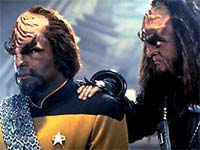
Martok
exige um teste de sangue de Sisko e Kira para falar com os
dois, mas a sua palavra de que os Klingons estão ali para
lutar com o Dominion lado a lado com a Federação não convence
Sisko. A refeição de Garak acompanhado por Odo no Replimat
é interrompida quando o comissário tem que evitar que alguns
Klingons molestem o inofensivo Morn. Alguns momentos depois
os mesmos Klingons vão a alfaiataria de Garak e batem no Cardassiano.
O ex-agente da Ordem Obsidiana é trado por Bashir, mas não
dá queixa e não diz o que os Klingons queriam.
Pouco tempo depois
Sisko tem que sair com a Defiant para salvar a nave de Yates
de ser abordado por uma ave de rapina, com seu capitão alegando
estar cumprindo ordens de vistoriar todas as naves entrando
e saída do sistema Bajoriano. O que é contra a lei do planeta
de Kira. Em seguida Martok informa a Sisko (do “jeito Klingon”
entregando a faca do falecido) que mandou matar o capitão
Klingon por este não ter enfrentado a Defiant. Sisko percebe
que a situação pode se deteriorar rapidamente e ele precisa
urgentemente saber do real motivo da força tarefa Klingon.
Ele envia uma mensagem ao comando da Frota Estelar pedindo
ajuda, algum tempo depois Worf chega à estação.
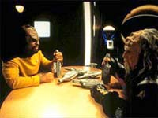
O
ex-oficial de segurança da Enterprise-D estava em licença
prolongada após a destruição de sua nave e Sisko lhe confia
a missão de descobrir por que os Klingons estão em DS9.
Uma abordagem direta não surte efeito, uma vez que Martok
lhe nega a dizer o real motivo da força tarefa, exceto que
é uma ordem direta do chanceler Gowron. Worf finalmente consegue
a informação ao tomar um porre em seus aposentos com um velho
amigo da sua família que devia um favor a Mogh, o pai do tenente
comandante.
Os Klingons tem
a intenção de invadir Cardassia, o motivo é que eles suspeitam
que o recente golpe de estado civil possa ter sido uma manobra
do Dominion e que Fundadores tenham se infiltrado no conselho
Detapa e tomado o controle (Cardassia já estava com suas fronteiras
fechadas a algum tempo). Mas eles não têm prova disto. Sisko
diz a Martok que o conselho da Federação repudia a planejada
invasão e pede que ele desista. Martok se retira dizendo que
iria conferenciar com Gowron, mas não dá resposta alguma e
as naves Klingons começam a deixar DS9 para a batalha
em território Cardassiano.
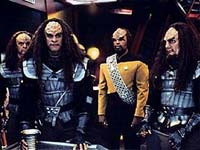
Sisko
e cia. decidem fazer alguma coisa a respeito do ataque e o
capitão convida Garak para “tirar as suas medidas” em meio
a uma reunião que descreve os planos de invasão Klingon. Garak
informa gul Dukat em Cardassia que, mesmo em meio a um levante
civil, prepara uma defesa ao iminente ataque. Algum tempo
depois, Sisko informa a sua equipe que Gowron foi contatado
diretamente pelo conselho da Federação e a intransigência
do governante Klingon levou ao fim do tratado de paz entre
os dois governos.
Eis que de forma
surpreendente o próprio Gowron vem à estação para falar com
Worf. O oficial da Frota vai a bordo da nave do chanceler,
mas se recusa a ir com ele para Cardassia. Com isto Gowron
se sente irreversivelmente ofendido, ele ofereceu uma maneira
de Worf se redimir aos olhos do seu povo por ter dado a informação
do ataque a Federação e este recusou. O governante Klingon
diz que enquanto ele viver não haverá lugar para Worf ou para
qualquer familiar seu no Império. Mas a palavra de Worf é
final, ele fez um juramento quando se tornou oficial da Frota
e vai mantê-lo custe o que custar.
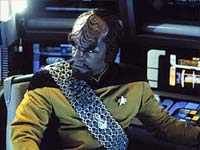
Worf
deseja se livrar do uniforme da Frota o quanto antes (ele
está com este pensamento desde a destruição da Enterprise-D,
crise existencial a qual agora obviamente atingiu o seu pico),
mas Sisko se recusa a assinar a exoneração do Klingon e diz
precisar dele ali. O comandante de DS9 contata Dukat
em Cardassia, que deu as costas para o comando central e agora
é consultor militar do conselho Detapa, e propõem um arriscado
plano para tirar o conselho em segurança da zona de conflito.
Ele pede que Dukat traga todos os conselheiros a um determinado
local especificado e parte com a Defiant para o resgate.
Algum tempo depois
a Defiant descobre a nave de Dukat em péssimas condições,
sob massivo ataque de aves de rapina. A Defiant é mais do
que páreo para os Klingons, mas perde o dispositivo de camuflagem,
tendo que baixar os escudos para transportar os sobreviventes.
A “navezinha valente” parte em dobra máxima de volta a estação,
com duas naves Klingons em seu encalço. Em DS9 a Defiant
já estava sendo aguardada por uma verdadeira Frota Klingon.
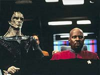
Sisko,
já a bordo, informa a Gowron que os conselheiros Cardassianos
foram testados e nenhum deles é um Fundador, o chanceler não
dá a mínima e diz que o quadrante Alfa estará mais seguro
com os Klingons controlando Cardassia. Gowron ordena o ataque
perante a recusa de Sisko em oferecer a eles os governantes
Cardassianos. Os novos escudos e armamentos de DS9,
preparados especificamente para um ataque do Dominion, funcionam
de forma soberba, mas em um dado momento à estação perde um
dos seus geradores de escudos e tropas de abordagem começam
a ser transportadas a bordo. Os Federados conseguem conter
os invasores na luta corpo a corpo, dando tempo ao chefe O’Brien
para compensar a perda do gerador.
Dax detecta reforços
da Frota Estelar se aproximando e Sisko diz a Gowron que o
que está ocorrendo é exatamente o que os Fundadores querem,
enfraquecer as potências do quadrante Alfa, fazendo o Império
lutar em duas frentes. Gowron, mesmo com a insistência de
Martok, decide então cessar o ataque. Mas diz que o que aconteceu
não será perdoado ou esquecido.
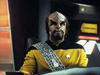
Sisko
dita o seu diário e relata como ficou extremamente orgulhoso
a respeito de quão bem os seus comandados se portaram diante
de tamanha crise e vai levar enfim os papeis de baixa para
Worf na cabine do Klingon. Sisko diz a Worf que também pensou
em deixar a Frota uma vez, após a morte da sua esposa, e diz
que teria sido um erro. Livrar-se do uniforme não faria com
que a dor de sua perda fosse embora junto. Isto faz Worf mudar
de idéia e assumir um posto de oficial de operações estratégicas
a bordo de DS9 (agora usando o vermelho da divisão de comando).
Eis que chega a mensagem de que os Klingons se recusam a deixar
as posições tomadas em sua invasão ao território Cardassiano,
eles estão decididos a ficar e Sisko diz que eles também.
Comentários
Julgado em termos de sua proposta de dar uma sacudida na série
e convidar fãs de A Nova Geração para “prová-la novamente”,
o segmento é um sucesso retumbante. Felizmente tal arriscada
manobra é concretizada com habilidade e consciência por parte
de Ira Behr e cia., sem descaracterizar a série e dando ênfase
no que o programa sempre teve de mais precioso: os seus personagens!
Mais detalhes, sem ter que enfrentar uma frota de naves Klingons
no processo, nas linhas abaixo.
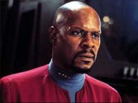
Os
detalhes de trama devem ser considerados primeiro em grande
escala, envolvendo as potências estelares em conflito, e depois
em pequena escala, a respeito de como tais desdobramentos
afetam os personagens nossos velhos conhecidos:
Os Klingons já haviam
demonstrado interesse sobre as questões do Dominion (“The
Visionary”) e os eventos em “The Die Is Cast” certamente
serviram para fortalecer qualquer senso de paranóia latente
dentro do Império. A posição de Cardassia é privilegiada em
termos de sua proximidade da Fenda Espacial e com sua potencialidade
militar e industrial, a “posse” de Cardassia tornaria uma
ofensiva em larga escala do Dominion a todo o quadrante alfa
uma realidade. Os Klingons obviamente perceberam isto e decidiram
por uma ofensiva antecipada, o que é justificável, para um
povo com tamanho histórico de conquista como o Klingon, com
ou sem o golpe de estado em Cardassia. Porém, é claro que
o golpe precipitou tudo.
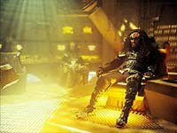
Um
levante civil em Cardassia na esteira da queda da Ordem Obsidiana
foi uma idéia absolutamente genial e é bastante razoável que
mesmo que o conselho Detapa não tenha sido substituído por
Fundadores, o povo de Odo tenha ajudado de alguma maneira
no golpe de estado (o que estaria de acordo com as táticas
mostradas em “Improbable Cause” e “The Die Is Cast”
e as que serão vistas a seguir em “Homefront” e “Paradise
Lost”), o que serve perfeitamente aos objetivos a curto,
médio e longo prazo do Dominion.
Tais desenvolvimentos
fazem muito sentido, o grande problema foi a escala de tempo
usada, tudo isto ocorre de forma abrupta demais enquanto que
um desenvolvimento mais gradual seria recomendado. Tendo em
mente o quanto tudo isto faz pela série em longo prazo e reconhecendo
o “dedo do Dominion” nestes eventos, tal “tratamento de choque”
não é vista como um problema aqui.
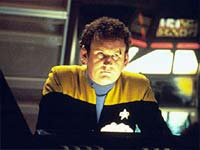
É
claro que é discutível a atitude de Gowron de atacar a estação
mesmo sabendo que não haviam Fundadores infiltrados no conselho
Detapa (parecendo mais uma necessidade de trama para maximizar
o quociente de ação do episódio do que um desenvolvimento
legitimo de história), mas sem dúvida é óbvio que ter uma
Cardassia frágil internamente é arriscado demais com a ameaça
do Dominion rondando o quadrante alfa (e talvez uma Cardassia
controlada pelos Klingons tivesse salvado milhões e milhões
de vidas em longo prazo, considerando a série como um todo).
E isto os Klingons perceberam muito antes dos Federados.
Os personagens recorrentes
imediatamente atingidos por tais eventos foram Dukat, que
ao sentir a chegada da mudança no governo trocou de lado rapidamente
e Garak, sempre no seu caminho sem retorno para o abismo (e
com ele todo o Império Cardassiano). É curioso que Garak ajudou
a salvar o Conselho, mas foi Dukat que ficou com todo o crédito.
Obviamente o regular
retratado na semana é o Klingon Worf, sendo sua introdução
feita de forma bastante natural. Sua interação com O’Brien
(companheiros dos tempos da Enterprise-D), Dax (por Curzon
Dax ser tão reverenciado pelos Klingons), Odo (ambos oficiais
de segurança tendo que escolher entre os seus povos e a lealdade
a Federação) e principalmente Sisko é na mosca, tocando os
pontos quase que óbvios (o que é uma boa coisa neste caso)
a serem explorados. Sua conversa final com Sisko garante a
ressonância emocional do episódio como um todo, ecoando temas
caros a esta série desde o seu piloto, “Emissary”.
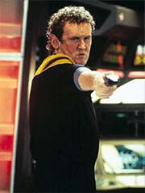
O
nível dos diálogos foi uniformemente excelente e inspirado
com um soberbo senso de humor. Garak, imbatível no quesito
“falas” em toda a história de Jornada nas Estrelas,
foi o destaque. Fosse interagindo com Odo, Bashir, Sisko (na
antológica “cena das medidas”), Quark (na melhor cena do episódio,
a “cena da cerveja”) ou mesmo com o seu desafeto eterno, Dukat.
A cena do “desruptor do Quark” também é digna de nota (Ira
Behr tinha que arrumar uma maneira de incluir o Rom, irmão
do Quark, no roteiro de alguma maneira!). Entre tantas outras.
A direção de Conway
foi extremamente competente, retratando com simplicidade a
interação entre os personagens e com alguns belos e inspirados
momentos de ação, especialmente no resgate com a Defiant do
conselho Detapa e no silêncio que se segue à derrota dos grupos
de abordagem Klingon no OPS. Os efeitos visuais são absolutamente
espetaculares e mantém o frescor que tinham na exibição original
do episódio. Um trabalho tão colossal com modelos em uma série
de TV é um testemunho para gerações posteriores sobre o que
de melhor foi feito no gênero, um registro de uma era. A Defiant
fotografa extremamente bem aparentemente sob qualquer ângulo
e o modelo do novo cruzador Klingon (na realidade uma adaptação
daquele visto no episódio “All Good Things...” de A
Nova Geração) é magnífico.
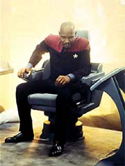
Todo
o elenco regular esteve inspirado, notadamente Brooks (é impressionante
como ele fica mais à vontade com o visual do seu famoso personagem:
“Hawk”), além de Alaimo e Robinson (especialmente este) se
destacando dentre os recorrentes. J.G. Hertzler fez uma ótima
estréia como Martok, parece que ele nasceu para o papel. O’Reilly
exagerou um pouco, mesmo para o seu padrão de atuação usual:
“pra lá de over!”. Em termos claros o único elo fraco foi
Penny Johnson, que aparentemente foi mal orientada, esticando
demais as suas falas, trazendo a tona sub-textos que confundiam
o espectador mais do que enriqueciam a caracterização.
Mais algumas rapidinhas...
- Sisko desobedece
por duas vezes a ordens diretas e faz mais um resgate impossível,
talvez ainda mais impossível que aquele de “The Die Is
Cast”. A “navezinha valente” mostrou a sua melhor forma,
abaixando os escudos e levando pancada a queima roupa por
dois minutos.
- O truque mencionado
por Martok aqui foi exatamente aquele que O’Brien e Kira usaram
para enganar os Cardassianos (ao menos por algum tempo) quanto
ao poderio militar da estação em “Emissary”.
- Neste episódio
Ira Behr “explodiu Lyta Alexander” (Patrícia Tallman, que
trabalhou durante anos fazendo trabalho de dublê em Jornada,
várias vezes de Nana Visitor, aliás) e em “The Siege Of
AR-558” ele “matou Lenier” (Bill Mummy, grande amigo do
mentor de DS9). Os fãs de “Babylon 5” que quiserem
enxergar algum significado maior nisto, fiquem à vontade.
- O que vem por
aí: Martok não é o que parece ser. Os testes de sangue não
são de fato efetivos para identificar Fundadores. A vistoria
da carga da nave de Yates toma um outro sentido em “For
The Cause” desta mesma quarta temporada. Principalmente
relevante é Gowron dizendo que enquanto ele viver
Worf não terá lugar no Império.
“The Way
of the Warrior” é um espetacular entretenimento com ótimos
valores de produção, com o bônus de, a menos da comprimida
escala de tempo, fazer bastante sentido para a série em longo
termo. Triunfam os personagens com uma verdadeira montanha
de brilhantes diálogos e afiadas caracterizações. Worf se
integra de forma suave ao elenco, aproveitando de forma imediata
os mais óbvios focos de ressonância com os demais personagens.
Diferente, mas ainda DS9 em seu âmago. Infinitamente
efetivo em sua proposta e mais um clássico da série.
Citações
Curzon Dax -
"In the long run, the only people who can really handle
the Klingons... are Klingons."
("Em longo prazo, os únicos que podem realmente cuidar
dos Klingons... são os próprios Klingons")
Worf - "We
were like warriors from the ancient sagas. There was nothing
we could not do."
("Nós éramos como os guerreiros das antigas sagas.
Não havia nada que nós não podíamos fazer.")
O'Brien - "Except keep the holodecks working right."
("Exceto manter os holodecks funcionando direito.")
Bashir - "I can't believe you're not pressing charges".
("Eu não acredito que você não deu queixa.")
Garak - "Constable Odo and Captain Sisko expressed
a similar concern, but really doctor, there was no harm done."
("O comissário Odo e o capitão Sisko expressaram
similar preocupação, mas realmente doutor, nenhum mal foi
feito.")
Bashir - "They [The Klingons] broke seven of your
transverse ribs and fractured your clavicle."
("Eles [Os Klingons] quebraram sete das suas costelas
e fraturaram a sua clavícula.")
Garak - "Ah, but I got off several cutting remarks
which no doubt did serious damage to their egos."
("Ah, mas eu também fiz vários comentários afiados,
os quais sem dúvida feriram profundamente aos seus egos.")
Worf - "Nice
hat"
("Belo chapéu")
Worf - "Curzon's
name is an honored one among my people."
("O nome de Curzon é reverenciado pelo meu povo")
Dax - "Yeah, but I'm a lot better looking than he
was." [DO ORIGINAL EM KLINGON]
("Pode até ser, mas eu sou muito mais bonita do que
ele era.")
Worf - "I guess so"
("Acho que sim.")
Dax - "If it makes things any easier, think of me
as a man --I've been one, several times."
("Se ajudar, pense em mim como um homem, afinal eu
já fui um, várias vezes.")
Sisko - "Well, that should make the trip home a little
more interesting."
("Bem, isto vai fazer da volta a estação algo mais
interessante.")
Garak - "It's
vile!"
("É tão nojento.")
Quark - "I know--it's so bubbly, and cloying... and
happy."
("Eu sei--É tão borbulhante, e açucarada... e feliz.")
Garak - "Just like the Federation."
("Exatamente com a Federação.")
Odo - "Doctor, if a Klingon were to kill me, I'd expect
nothing less than an entire opera on the subject."
("Doutor,
se um Klingon realmente viesse a me matar, eu não esperaria
menos que uma ópera completa a respeito.")
Trivia
 As mais interessantes porções de trivia para o segmento e
para a quarta temporada como um todo podem ser encontradas
aqui.
As mais interessantes porções de trivia para o segmento e
para a quarta temporada como um todo podem ser encontradas
aqui.
O episódio foi indicado a um prêmio de edição de som, pela
respectiva associação de classe americana.
Sessão Série Clássica: O embaixador Tholiano devia
um favor a Sisko (pago em legítima "seda Tholiana",
aliás) e o irmão de Kasidy Yates joga no Pike City Pioneers
(time de beisebol nomeado em honra ao capitão Pike) do planeta
Cestus III (o mesmo onde Kirk enfrentou o capitão Gorn em
"Arena").
Odo e Garak agora partilham cafés da manhã (ver final de "The
Die Is Cast").
Alexander, filho de Worf, vive com os avôs (adotivos) na Terra.
Worf estava de licença (desde a destruição da Enterprise-D
em "Generations") no mosteiro de Borath ("Rightful
Heir"), procurando recuperar um sentido para a vida.
Estava pensando seriamente em deixar a Frota Estelar.
Gul Dukat é agora conselheiro militar chefe do conselho Detapa,
órgão civil governante de Cardássia, na esteira de um golpe
de Estado, aparentemente insuflado pelos "movimentos
de dissidentes políticos Cardassianos" (TM), citados
vagamente, de tempos em tempos, na série, como em "Profit
and Loss" ou "Second Skin". O fim
da Ordem Obsidiana (em "The Die Is Cast")
provavelmente acelerou o processo.
Gaila, primo de Quark citado em "Civil Defense"
(que é dono de uma lua, por falar nisto), é um traficante
de armas, Quark nunca se juntou ao parente por ser "um
comerciante que gosta de interagir com pessoas e compradores
de armas nunca tem tempo para conversar". Mais sobre
Gaila em "Little Green Men", desta temporada,
e em "Business as Usual", da quinta.
Odo sabe ler Ferengi.
Worf já esteve sim em uma nave da Federação com dispositivo
de camuflagem em "The Pegasus" (escrito por
Ronald D. Moore) da sétima temporada de A Nova Geração,
ao contrário do que ele diz aqui. Worf bebeu (em tela) pela
primeira vez suco de ameixa (uma "bebida de guerreiro",
segundo ele) em "Yesterday's Enterprise",
da terceira temporada de A Nova Geração.
Uma novelização do episódio existe.
Siddig El Fadil mudou o seu nome artístico para Alexander
Siddig a partir deste episódio, mas continuará sendo referido
pelo seu nome de batismo neste Guia de Episódios até o fim.
Foi basicamente uma decisão para facilitar o trânsito do seu
nome entre os agentes de escalação de elencos americanos.
Este telefilme é dedicado a memória de Gregg Duffy Long (assistente
da equipe de roteiristas de DS9 e que morreu de Aids
próximo ao final da terceira temporada) e Ronald W. Smith
(cabeleireiro de DS9 e Voyager, que morreu de
ataque cardíaco).
Ficha
técnica
Escrito por
Ira Steven Behr & Robert Hewitt Wolfe
Direção de James L. Conway
Exibido em 02/10/1995
Produção: 073
Elenco
Avery
Brooks como Benjamin Lafayette Sisko
René Auberjonois como Odo
Nana Visitor como Kira Nerys
Colm Meaney como Miles Edward O'Brien
Alexander Siddig (Siddig El Fadil)
como Julian Subatoi Bashir
Armin Shimerman como Quark
Terry Farrell como Jadzia Dax
Cirroc Lofton como Jake Sisko
Michael Dorn como Worf
Elenco
convidado
Penny Johnson como Kasidy Yates
Marc Alaimo como Dukat
Robert O'Reilly como Gowron
J.G. Hertzler como Martok
Obi Ndefo como Drex
Christopher Darga como Kaybok
William Dennis Hunt como Huraga
Andrew Robinson como Elim Garak
Patricia Tallman como uma oficial de armas
Judi Durand como a voz do computador da estação